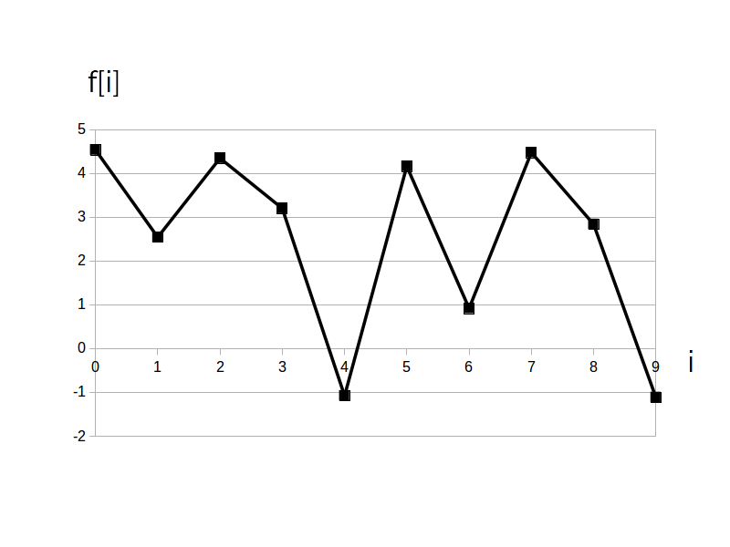
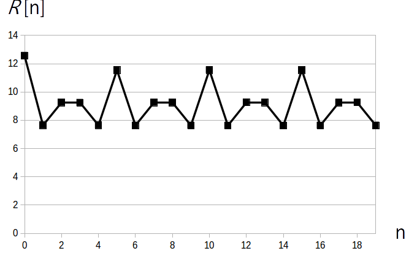

さて $f[i]$ が定常過程であるとき、自己相関関数は
\[ R[n] = \textrm{E}\left ( f[i] \cdot f[i+n] \right ) \]
により定義されます。
前ページの2つの例の様に、もし $f[i]$ の平均が 0 の場合は共分散と自己相関関数は一致します。
また自己相関関数も時刻 $i$ の値によらず遅延時刻 $n$ のみで値が決まる関数となります。
こうやって求めた $R[n]$ の値が相対的に大きい値の時、$f[i]$ とそこから時刻 $n$ だけ遅延させた $f[i+n]$ の間には強い相関があるということを意味します(前ページの図3と図7を参照して下さい)。
ところが $f[i]$ を生成したモデルや確率分布などは普通分かりませんし、仮に分かっていてもかなり複雑なモデルや分布になったりしますので、ディジタル信号処理の世界では実際に観測された $f[i]$ の値を使って求める「標本自己相関関数(sample autocorrelation function)」で代用することが多いです。
$f[i]$ の信号長を $\textrm{N}$ とした時
\[ R[n] = \frac{1}{\textrm{N}}\sum_{i = 0}^{\textrm{N-1}} \left \{ f[\ i\ ] \cdot f[\ (i+n)\ \textrm{mod}\ \textrm{N} \ ] \right \} \]$n$・・・遅延時刻(ラグとも言う)、整数の変数、範囲は $n=0,1,\cdots,\textrm{N-1}$
A mod N・・・割った余りを求める剰余演算(modulo)、(例) 5 mod 2 = 1
※ 文献によっては $\sum$ の計算をしたあと全体を $\textrm{N}$ で割らない場合もあります
$n$ の範囲は $n=0,1,\cdots,\textrm{N-1}$ なので、自己相関関数も $R[0]$ から $R[\textrm{N}-1]$ までの信号長 N のディジタル信号になります。
なお $\textrm{R}[0]$ は
\[ R[0] = \frac{1}{\textrm{N}}\sum_{i = 0}^{\textrm{N-1}} \left \{ f[\ i\ ] \right \}^2 \]
ですので信号の平均パワーを表します。
同じ信号列同士の相関になりますので $\textrm{R}[0]$ は $R[0]$ から $R[\textrm{N}-1]$ までの中で必ず最大値となります。
ではここで例としてディジタルサイン波
\[ f[i] = 1 \cdot \sin( 2\pi /5 \cdot i -\pi/2 ) \]
を N=10 点生成した信号を考えます。
実際に得られた信号が以下の図1です。

この信号の自己相関関数のグラフが以下の図2です。

※ $R[0] = 1/2$ は振幅 1 のサイン波の平均パワー(= 実効値( $1/\sqrt{2}$ )の自乗)に相当します